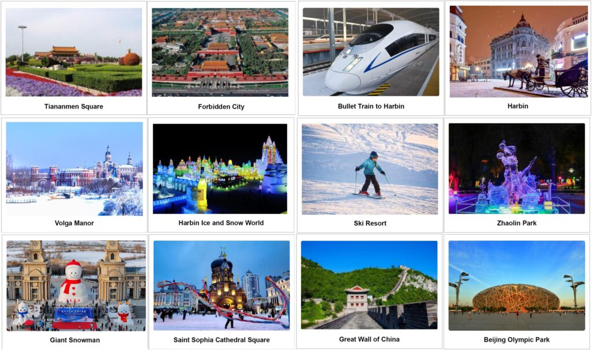

Beijing & Harbin.
Explore Beijing & Harbin with your own travel party. Shape the route, dates and pace with Senyum.

A journey to make your own.
Start with this route. Tell us your dates, who’s travelling and what you’d love to experience; we’ll help shape the details around you.
- Beijing
- Harbin
- Winter scenery
- Muslim-friendly travel
Your time in Beijing & Harbin.
DAY01Arrival in Beijing
Upon your morning arrival in Beijing, you’ll be warmly welcomed at the airport and escorted to the heart of the city, Tiananmen Square. As the world’s largest city square, Tiananmen Square stands as a powerful symbol of Chinese history.
A leisurely stroll leads you to the Forbidden City, the imperial heart of China for over five centuries. This magnificent palace complex served as the residence of 24 emperors from the Ming and Qing dynasties, witnessing the rise and fall of imperial power.
After prayer at Niujie Mosque, take a leisurely stroll to the Muslim Supermarket, a unique shopping destination catering to the local Muslim community.
Afterward, soak up the lively atmosphere of Wangfujing Street, a quintessential
Meals: Lunch · Dinner
DAY02Bullet Train to Harbin, Winter Clothes Shop
Take a bullet train to Harbin (approximately 6 hours). Known as the ‘Ice City’, Harbin is situated in China’s frigid northeastern province of Heilongjiang. Established in 1898 due to the construction of the Russian-built Chinese Eastern Railway, Harbin flourished as a settlement, attracting a diverse population of immigrants from the Russian Empire and later Jewish communities.
Lunch will be packed and taken to train (bread + milk + chicken sausage + fruit).
Upon arrival in Harbin, proceed to a Winter Clothes shop to buy the heavy outermost layer. The city’s frigid temperatures, often dipping to a bone-chilling -30°C (-22°F) and intensified by icy winds, demand ample layers of warm clothing.
Meals: Breakfast · Lunch · Dinner
DAY03Harbin, Volga Manor, Daowai Mosque, Ice & Snow World
Immerse yourself in Harbin’s Russian legacy with a trip to Volga Manor in the morning. This sprawling park features over 30 meticulously recreated Russian-style buildings, offering breathtaking scenery, unique architecture, and cultural performances.
After a delicious lunch, head to Daowai Mosque for salat prayer. Then, prepare to be dazzled by the world-famous Ice & Snow World. This massive winter wonderland boasts over 2,000 incredible ice and snow sculptures, from intricate landscapes and majestic castles to exhilarating rides and captivating shows.
Meals: Breakfast · Lunch · Dinner
DAY04Ski Resort / Central Street / Zhaolin Park
Hit the slopes! Take a short 20-minute drive from downtown Harbin to Mingdu Ski Resort. With 4 trails suited for all skill levels, including a dedicated children’s run, this resort caters to skiers of all ages.
After lunch, take a stroll on the cobblestone paths of Central Street. This historic street is a testament to Harbin’s Russian roots, showcasing an architectural smorgasbord of eclectic, Baroque, Renaissance, and modern styles.
As the day winds down, be enchanted by the world-renowned Zhaolin Park Ice Lantern Show. Get ready to be captivated by a stunning display of light and color, where intricate ice sculptures are brilliantly illuminated.
Meals: Breakfast · Lunch · Dinner
DAY05Harbin, Giant Snowman, Winter Swimming, Saint Sophia Cathedral, Songhua River Bridge, Bullet Train to Beijing
Start your day with a whimsical encounter at Harbin’s Music Park! Witness a Giant Snowman towering over 18 meters tall, sculpted from a staggering 2,000 cubic meters of snow.
Next, head to the Songhua River for a unique spectacle: a thrilling Winter Swimming show! Afterward, delve into Harbin’s history at the majestic Saint Sophia Cathedral. This architectural marvel, once the largest Eastern Orthodox church in the Far East, now serves as the Harbin Architecture Art Gallery.
Cap off your day with a breathtaking vista from the historic Songhua River Railway Bridge built by the Russians in the early 1900s. Take a bullet train to Beijing (approximately 6 hours).
Dinner will be packed and taken to train (bread + milk + chicken sausage + fruit). Pick up by Beijing tour guide and check in hotel.
Meals: Breakfast · Lunch · Dinner
DAY06Beijing, Great Wall, Olympic Park, Hongqiao Market
Start your day with a visit to Burning Cream Center, renowned for its production of Chinese herbal cream that addresses various skin ailments such as pain, itching, fungal infections, and wounds.
Next, admire the Jurongguan section of the Great Wall of China. Built continuously from the 3rd century BC to the 17th century AD, the Great Wall served as a major military defense project for successive Chinese Empires and still stands impressively at 3,750 miles long. Enjoy lunch at local halal restaurant.
Shop at very popular Jewelry City for inexpensive items. Next, explore the stunning Beijing Olympic Park, a vast complex built for the 2008 Summer Olympics and the 2022 Winter Olympics. Marvel at iconic structures like the Bird’s Nest, Water Cube, and Olympic Tower.
End the day with a visit to the expansive Beijing Olympic Park Giant Snowman Saint Sophia Cathedral Square Great Wall of China Beijing Office: Room 8611, Qilin Jinge Business Building, Fengtai District, Beijing, China Xi’an Office: Room 1805, Bldg C, Huicheng Tianxi, Zhuque S. Rd., Yanta District, Xi’an, Shaanxi Hongqiao Market, where you can find a wide variety of goods, including electronics, fashion, handicrafts, and pearls.
Meals: Breakfast · Lunch · Dinner
DAY07Kunming
Free & Easy
Transfer to the airport for your departure flight. Wish you a pleasant journey home!
Experience an unforgettable winter journey with our China Harbin Halal Tours, ideal for travelers seeking China Harbin Muslim Tours, China Harbin Halal Travel, and Harbin Muslim Travel from Singapore. This 7 Days 6 Nights Beijing and Harbin Muslim-friendly adventure combines cultural exploration and seasonal highlights, perfect for families, couples, and groups. Discover the charm of Beijing’s iconic landmarks alongside Harbin’s famous ice and snow attractions, creating a unique travel experience in Northern China. Enjoy visits to mosques, access to prayer facilities, and a variety of halal dining options throughout the trip. Explore vibrant shopping streets, local markets, and cultural districts while immersing yourself in Chinese heritage and winter festivities. With comfortable accommodations, guided tours, and seamless travel arrangements, this China halal tour package ensures convenience and peace of mind. Perfect for travelers from Singapore, this journey blends culture, adventure, and faith-friendly travel into one memorable Harbin experience.
Meals: Breakfast · Lunch
Final routes, accommodation, meals and travel arrangements are confirmed with your consultant before booking.
Let’s get the details right.
Share your preferred dates, number of travellers and any special requests.
Confirm hotels, flights, transfers, meal arrangements and the final price with our team.